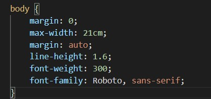
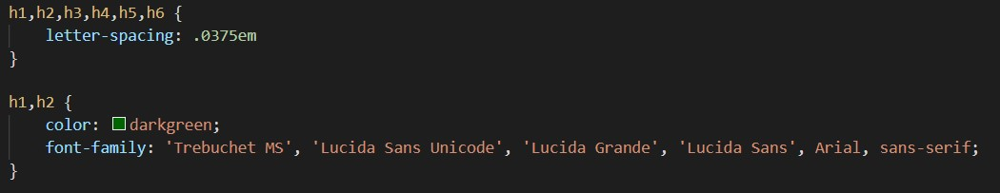

| Name | Date | Reason For Changes | Version |
|---|---|---|---|
| . | . | . | . |
| . | . | . | . |
| . | . | . | . |
SRS (Software Requirements Specification) este un document ce proiecteza prin specificatiile concrete oferite de dezvoltatori, un sistem software, mai exact un atlas zoologic digital,care urmeaza a fi dezvoltat pe baza rapoartelor descrise in cadrul acestuia,totodata ajutand la o mai buna sincronizare a membrilor echipei in vederea obtinerii produsului final. Domeniu de aplicare este WEB-ul, produsul indreptandu-se spre o arie informationala.
Documentul a fost realizat utilizand sintaxa HTML (pentru creearea paginii Web) + CSS(stilizare la nivel de pagina web : culori, dimensiuni,sapatiere,font,spatiere dintre elemente). Specificatii:


De asemenea, in vederea structurarii intregului schelet se foloseste o lista ordonata in HTML, cat si bookmark-uri cu link-uri care te trimit prin click la un id de pe pagina.
Acest SRS este dedicat cu precadere dezvoltatorilor aplicatiei WEB, dar poate fi accesat si de utlizatorii aplicatiei.
In cazul dezvoltatorilor aplicatiei WEB este recomandata pracurgerea intregului material, categorie cu categorie, pentru a se reusi o sincronizare la nivel de echipa, pentru a intelege cerintele proiectului
si pentru a avea acces la toate tehnologiile utilizate pe diferite sectoare de lucru (backend, frontend, database connection etc. ) ca la final sa fie asigurata functionalitatea produsului. Utiliatorilor le este
recomandata accesarea categoriei Introduction, subpunctele Product Scope si Product Functions, pentru a se familiariza cu conceptul aplicatiiei , scopul si functionalitatile de care acestia pot beneficia.
Proiectul ZoW - Zoological Web Organizer are drept scop final realizarea unei aplicatii web, mai exact unui atlas zoologic digital ce ofera utilizatorului o serie de functionalitati. Acesta poate sa vizualizeze albumele intial generate de catre aplicatie dar si sa genereze propriile albume tematice personalizate in functie de cerintele sale(animale de companie, domestice, salbatice etc) prin intermediul unei cautari multi-criteriale pe baza unor filtre la nivelul bazei de date.Se va crea atat un clasament al celor mai populare animale pe baza sistemului de rating de care dispune utilizatorul, disponibil si ca flux de date RSS cat si diverse statistici disponibile in formate deschise-minimal, CSV si PDF.
Link-uri :
https://en.wikipedia.org/wiki/Software_requirements_specification
https://github.com/rick4470/IEEE-SRS-Tempate
https://www.geeksforgeeks.org/software-requirement-specification-srs-format/
https://relevant.software/blog/software-requirements-specification-srs-document/
Produsul final este un atlas Zoologic Digital, mai exact o aplicatie web (open-source) ce functioneaza independent si este destinata uzului general. Fiind o aplicatie open-source, se presupune a fi utilizata de un numar nelimitat
de useri, incluzand si un sistem de logare,ce aduce o serie de functionalitati in plus. Componentele majore ale aplicatie sunt doua : FRONTEND si BACKEND.
Partea de FRONT (HTML,CSS,JavaScript) face legatura cu user-ul,prin intermediul ei acesta poate vedea si interactiona cu WEB sever-ul, beneficiind astfel de toate functionalitatile aplicatiei.
Partea de BACK(Node.js, Typescript, Typeorm) asigura corectitudinea functionalitatilor, fiind zona de implementare propriu-zisa. Desigur, ca modalitate de stocare a datelor ce intra in componenta produsului, este folosita
o baza de date MySQL.
Atasez diagrama aplicatiei ce ilustreaza componentele principale din care este alcatuita :
Aceasta aplicatie ofera utilizatorului o serie de functionalitati:
Aplicatia ZoW este destinata tuturor utilizatorilor de aplicatii web. Datorita functionalitatilor pe care le detine, aceasta se adreseaza in special utilizatorilor care doresc sa afle informatii despre diferite categorii de
animale. Se considera ca utilizatorul are cunostintele de baza de operare pe internet si acces la un dispozitiv conectat la retea.
Aplicatia va avea in principiu doua clase majore de utilizatori : utilizatori activi - inregistrati / ce folosesc aplicatia pentru functionalitatile premium de creare albume personalizate, respectiv simpli
vizitatori care intra in general pentru a vizualiza si a cauta informatii cu privire la un animal din aplicatie. Se presupune ca, categoria majoritara va fi cea a userilor activi care vor frecventa regulat aplicatia.
Fiind o aplicatie web, ZoW poate fi accesata de pe toate sistemele de operare( Windows, Linux cat si MacOS) respectiv de pe orice tip de browser. Aceste medii de operare constau intr-o interfata cu utilizatorul furnizata in general de un manager de aplicatii , repectiv de o interfata de programare a aplicatiilor ( API ) frunizata de managerul de aplicatii. Aplicatia functioneaza de pe orice dispozitiv/PC cu specificatii standard, chiar minimale, dpdv al vitezei proceorului, RAM, ROM. Dispozitivul trebuie sa fie conectat la internet.
In ceea ce priveste elementele de design, se va recurge la un Design UI/UX ce va facilita utilizarea cu usurinta de catre toate persoanele interesate de site. Este de datoria dezvoltatorilor sa respecte niste specificatii stabilite
de comun acord cu privire la paleta de culori, dimensiune font, dimensiuni imagini,spatiere samd.
Paleta de culori aleasa : De asemenea, exista constrangeri si pe partea de Backend : fiecare
membru din echipa trebuie sa scrie cod in limbajele stabilite initial : Node.js, Typescript, Typeorm.
O alta constrangere de ordin tehnic pentru buna colaborare a echipei de dezvoltatori este actualizarea regulata(push) pe git a oricaror tipuri de informatii, fie ele implementari si nu numai. Lucrul in paralel la acelasi produs poate
fi destul de solicitant si este recomandata o atentie sporita la imbinarea partilor de cod lucrate individual.
Aplicatia intra in categoria aplicatiilor web, iar folosirea acesteia va fi una intuitiva,mai exact sugerata de intrega interfata ce faciliteaza utilizatorului navigarea in aplicatie si descoperirea de comenzi utile. Suplimentar, va fi introdusa in subsolul paginii o rubrica About, respectiv o pagina dedicata ce trimite catre un ghid de utilizare ale comenzilor site-ului.
Daca utilizatorul pierde conexiunea cu internetul, atunci inevitabil aplicatia web nu va mai raspunde si functionalitatile sale devin indisponibile.
Dependenta SOFTWARE: Daca dezvolatorii aplicatie nu acorda atentie necesara asupra codului scris, mai ales, atunci cand folosesc API - uri ameninta performanta si securitatea aplicatiei.
Conexiunea cu baza de date trebuie sa fie una sigura, este foarte importanta structurarea sa deoarece pe baza acesteia se construiesc filtrele de cautare multi-criteriala.
Interfetele dintre site-ul web si un utilizator sunt prezente printr-un set de elemente de arhitectura prezente in pagina web .Implementarea unei bari de cautare in scopul vizualizarii imaginilor si informatiilor referitoare
la un anumit animal sau specie de animale usureaza procesul de cautare a informatiilor realizat de utilizator pe site-ul web .
Totdata , sistemul de logare si autentificare a utilizatorilor
reprezinta un mijloc prin care informatiile acestora precum date de identificare,istoricul cautarilor pe site-ul web, albumele preferate sa fie confidentiale .
Implementarea unor filtre la nivelul barii de
cautare usureaza atat procesul de cautare a informatiilor si imaginilor despre un anumit animal sau anumita specie de animale .
Din punct de vedere hardware , site-ul web trebuie accesat de pe un device care corespunde normelor de functionare normala fiind conectat totodata si la internet .
Din punct de vedere software , site-ul web e conectat la o baza de date MySQL , putand fii accesat de pe toate sistemele de operare ( Windows , Linux ) de pe browsere performante precum Firefox sau Google Chroome . Ca si mesaje
cu alte componente software , in momentul cautarii de catre utilizator a unei informatii , site-ul web obtine informatii din baza de date prin intermediul interogarilor, informatii pe care le va afisa in pagina din browser-ul utilizatorului
in urma comunicarii dintre server si browser-ul acestuia . . Site-ul web va fi disponibil doar utilizatorilor care acceseaza serviciul www oferit de internet care are la baza protocolul TCP/IP .
Alte informatii care vor fi distribuite intre site-ul web si device-ului utilizatorului sunt albumele cu informatii despre animale care vor fi salvate fie in format PDF sau CSV si a unor statistici .
Ca si protocoale de comunicare intalnite in cadrul aplicatiei sunt HTTP si FTP ,ultimul fiind folosit in transmiterea albumelor generate in format CSV sau PDF si a statisticilor.
4.1.1 Description and Priority Provide
Priority Medium
Componenta permite utilizatorului sa se inregistreze pe site folosind un nume de utilizator, un email si o parola.
4.1.2 Stimulus/Response Sequences
Utilizatorul apasa click pe casetele unde trebuie introduse datele – Sistemul permite utilizatorului introducerea de text in casetele respective.
Utilizatorul introduce text in campurile necesare inregistrarii – Sistemul verifica ca datele introduse sa corespunda campului completat si sa fie corecte (e.g in campul pentru email se verifica sa fie introdusa o adresa de email corecta)
Utilizatorul apasa pe butonul de inregistrare, dar nu a completat toate campurile necesare – Sistemul nu permite inregistrarea si atentioneaza utilizatorul faptul ca a omis un camp ce trebuie completat.
Utilizatorul apasa pe butonul de inregistrare, iar toate campurile sunt completate corect – Sistemul inregistreaza cu succes utilizatorul in baza de date.
4.1.3 Functional Requirments
Preluarea textului din field-urile de input din form-ul de inregistrare.
Request de la frontend catre backend si transmiterea datelor din frontend.
Accesarea bazei de date din backend si interogarea ei pentru a verifica ca nu exista deja un utilizator cu acelasi nume. In caz afirmativ se vor insera datele noului user in tabela Users.
Response de la backend catre frontend si afisarea continutului corespunzator in frontend in functie de response. In cazul in care username-ul exista deja in baza de date se va afisa faptul ca username-ul ales este indisponibil.
4.2.1 Description and Priority Provide
Priority Medium
Componenta permite utilizatorului sa se logheze pe site folosind un nume de utilizator si o parola.
4.2.2 Stimulus/Response Sequences
Utilizatorul apasa click pe casetele unde trebuie introduse datele – Sistemul permite utilizatorului introducerea de text in casetele respective.
Utilizatorul apasa pe butonul de logare, dar nu a completat toate campurile necesare – Sistemul nu permite inregistrarea si atentioneaza utilizatorul faptul ca a omis un camp ce trebuie completat.
Utilizatorul apasa pe butonul de logare, dar introduce un username inexistent in baza de date – Sistemul nu permite logarea si atentioneaza utilizatorul faptul ca a introdus un username inexistent.
Utilizatorul apasa pe butonul de logare, dar introduce o parola gresita – Sistemul nu permite logarea si atentioneaza utilizatorul faptul ca a introdus o parola gresita.
Utilizatorul apasa pe butonul de logare, iar toate campurile sunt completate corect – Sistemul permite logarea cu succes a utilizatorului pe site.
4.2.3 Functional Requirments
Preluarea textului din field-urile de input ale username-ului si parolei.
Request din frontend catre backend.
Call catre baza de date din backend si interogarea acesteia pentru verificarea existentei user-ului si corectitudinea parolei. Daca datele corespund se interogheaza baza de date din nou pentru a prelua numele si id-urile albumelor personale
ale utilizatorului.
Response de la backend catre frontend cu datele obtinute in urma interogarii.
Afisarea continutului corespunzator si incarcarea componentei ce contine numele utilizatorului pe pagina principala plus numele albumelor personale in sectiunea “Albumele mele” din meniu.
4.3.1 Description and Priority Provide
Priority High
Componenta permite cautarea multi-criteriala si generarea rezultatelor corespunzatoare cautarii.
4.3.2 Stimulus/Response Sequences
Utilizatorul apasa pe bara de search – Sistemul focuseaza bara de search si permite utilizatorului introducerea de text.
Utilizatorul apasa enter dupa ce a introdus text in bara de cautare – Sistemul afiseaza rezultatele pentru acea cautare.
4.3.3 Functional Requirments
Preluarea textului din field-ul de input al barii de cautare.
Request din frontend catre backend.
Call catre baza de date din backend si interogarea acesteia pentru a selecta datele care corespund cu textul introdus in bara de cautare.
Response din backend catre frontend cu datele obtinute in urma interogarii.
Crearea componentelor de afisat in frontend, in functie de datele primite de la backend.
4.4.1 Description and Priority Provide
Priority High
Componenta permite utilizatorilor selectarea si vizualizarea unui anumit album prestabilit.
4.4.2 Stimulus/Response Sequences
Utilizatorul selecteaza un album pe care doreste sa il vada – Sistemul permite utiliztorului sa selecteze un singur album.
Utilizatorul apasa pe butonul “Afiseaza album” – Sistemul genereaza si afiseaza in pagina albumul selectat.
4.4.3 Functional Requirments
Request din frontend catre backend.
Accesarea si interogarea bazei de date pentru a selecta animalele corespunzatoare albumului dorit.
Response de la backend catre frontend cu datele obtinute in urma interogarii.
Crearea componentelor de afisat in frontend, in functie de datele primite de la backend.
4.5.1 Description and Priority Provide
Priority High
Componenta permite utilizatorului sa filtreze un album in functie de anumite proprietati generale.
4.5.2 Stimulus/Response Sequences
Utilizatorul selecteaza proprietatea dorita pentru filtrare si apasa pe butonul “Filtreaza album” – Sistemul filtreaza albumul si il afiseaza conform preferintelor.
4.5.3 Functional Requirments
Sortarea si rearanjarea componentelor albumului in pagina in functie de proprietatea selectata pentru filtrare.
4.6.1 Description and Priority Provide
Priority Medium
Componenta permite utilizatorului logat sa salveze albumul curent de pe pagina in colectia personala.
4.6.2 Stimulus/Response Sequences
Utilizatorul apasa pe butonul “Salveaza album”, dar nu este logat pe site – sistemul directioneaza utilizatorul catre pagina de autentificare.
Utilizatorul apasa pe butonul “Salveaza album” si este logat pe site – sistemul salveaza respectivul album in colectia utilizatorului.
4.6.3 Functional Requirments
Verificare daca utilizatorul este logat prin interogarea statusului din baza de date.
Identificarea albumului pe care utilizatorul doreste sa il salveze si transmiterea acestor date din frontend catre backend.
Accesarea bazei de date din backend si inserarea datelor preluate in tabelul special destinat albumelor userilor.
4.7.1 Description and Priority Provide
Priority High
Componenta permite utilizatorului sa aleaga mai multe propietati in functie de care se vor tria animalele si se va genera un album.
4.7.2 Stimulus/Response Sequences
Utilizatorul selecteaza proprietatile dorite si apasa pe butonul “Generare album” – Sistemul afiseaza albumul conform preferintelor.
4.7.3 Functional Requirments
Liste de tip dropdown cu optiuni posibile.
Preluarea proprietatilor selectate din listele de tip dropdown.
Request din frontend catre backend.
Call la baza de date in backend si interogarea acesteia pentru a selecta datele corespunzatoare cu proprietatile selectate.
Response de la backend catre frontend cu datele obtinute in urma interogarii.
Generarea si afisarea albumului in frontend.
4.8.1 Description and Priority Provide
Priority Medium
Componenta permite unui utilizator logat sa isi creeze propriul album cu animale.
4.8.2 Stimulus/Response Sequences
Utilizatorul apasa pe butonul “Creare album”, dar nu este logat pe site – Sistemul nu permite utilizarea butonului si directioneaza user-ul catre pagina de autentificare.
Utilizatorul apasa pe butonul “Creare album” si este logat pe site – Sistemul permite utilizarea butonului si creeaza albumul.
4.8.3 Functional Requirments
Verificare daca utilizatorul este logat prin interogarea statusului din baza de date.
Pop-up a unei casete de input text atunci cand user-ul apasa pe butonul de creare album pentru a alege numele albumului.
Trasmiterea datelor introduse din frontend catre backend.
Accesarea bazei de date din backend si inserarea albumului in tabelul special destinat albumelor userilor.
Afisarea din frontend a textului “Album creat cu succes” si introducerea acestuia in meniul din stanga la sectiunea “Albumele mele”.
4.9.1 Description and Priority Provide
Priority High
Fiecare album este format din mai multe carduri cu animale. Cardul cuprinde o poza si numele animalului.
4.9.2 Stimulus/Response Sequences
Utilizatorul apasa click pe un card cu un animal specific – Sistemul incarca pagina corespunzatoare animalului.
4.9.3 Functional Requirments
Onclick event pe card in urma caruia se va face un html request si se va incarca pagina corespunzatoare.
4.10.1 Description and Priority Provide
Priority Low
Slider de imagini cu un anumit animal care iti permite sa misti imaginile la stanga sau la dreapta si sa le maresti.
4.10.2 Stimulus/Response Sequences
Utilizatorul apasa pe imaginea principala a slider-ului – Sistemul mareste imaginea si o plaseaza pe centrul ecranului.
Utilizatorul apasa pe sageata dreapta a slider-ului – Sistemul modifica imaginea principala si o afiseaza pe cea de la dreapta.
Utilizatorul apasa pe sageata stanga a slider-ului – Sistemul modifica imaginea principala si o afiseaza pe cea de la stanga.
4.10.3 Functional Requirments
Modal image.
JavaScript Carousel.
4.11.1 Description and Priority Provide
Priority Low
Fiecare animal va avea pe pagina proprie un buton de like si numarul de like-uri pe care le are. Componenta ajuta la generarea clasamentului celor mai populare animale.
4.11.2 Stimulus/Response Sequences
Utilizatorul apasa pe butonul de like – Sistemul mareste cu +1 numarul de like-uri ale animalului corespunzator.
4.11.3 Functional Requirments
Request din frontend catre backend.
Accesarea bazei de date din backend si update la numarul de like-uri ale animalului.
Schimbarea numarului de like-uri pe frontend in urma update-ului.
4.12.1 Description and Priority Provide
Fiecare animal va avea pe pagina proprie un buton “Adauga in album” care permite utilizatorului sa adauge un animal intr-un album propriu.
Priority Medium
4.12.2 Stimulus/Response Sequences
Utilizatorul apasa pe butonul “Adauga in album”, dar nu este logat pe site – Sistemul directioneaza utilizatorul catre pagina de autentificare.
Utilizatorul apasa pe butonul “Adauga in album” si este logat – Sistemul afiseaza lista cu albumele utilizatorului disponibile in care poate adauga animalul.
4.12.3 Functional Requirments
Verificare daca utilizatorul este logat prin interogarea statusului din baza de date.
Selectarea numelor albumelor incarcate in sectiunea “Albumele mele” si afisarea acestora intr-o lista din care se poate alege un singur album.
Accesarea din backend a bazei de date si inserarea id-ului animalului corespunzator in albumul personal ales de user.
Afisarea mesajului “Animalul a fost adaugat cu succes in album”.
4.13.1 Description and Priority Provide
Priority High
In pagina principala va exista un buton “Generare statistici” care va genera diverse statistici disponibile in formate CSV si PDF.
4.13.2 Stimulus/Response Sequences
Utilizatorul apasa pe butonul “Generare statisitici” – Sistemul genereaza statisici diverse in formar CSV si PDF.
4.13.3 Functional Requirments
TBD
4.14.1 Description and Priority Provide
Priority Medium
In pagina principala va exista un buton “Generare clasament” care va genera top 20 animale in functie de popularitate (numarul de like-uri).
4.14.2 Stimulus/Response Sequences
Utilizatorul apasa pe butonul “Generare clasament” – Sistemul genereaza clasamentul primelor 20 de animale cele mai populare.
4.14.3 Functional Requirments
TBD
4.15.1 Description and Priority Provide
Priority Medium
Componenta permite utilziatorului logat vizualizarea si afisarea albumelor salvate sau a albumelor personale create.
4.15.2 Stimulus/Response Sequences
Userul apasa pe lista de tip dropdown din sectiunea “Albumele mele” – Sistemul afiseaza albule personale si salvate ale utilizatorului si ii permite selectarea unuia.
Userul selecteaza unul dintre albume si apasa pe butonul “Afiseaza album” – Sistemul afiseaza albumul selectat.
4.15.3 Functional Requirments
Request din frontend catre backend.
Accesarea si interogarea bazei de date din backend pentru a selecta animalele corespunzatoare albumului dorit.
Response de la backend catre frontend cu datele obtinute in urma interogarii.
Crearea componentelor de afisat in frontend, in functie de datele primite de la backend.
4.16.1 Description and Priority Provide
Priority Low
Componenta permite unui utilizator logat sa se delogheze de pe site.
4.16.2 Stimulus/Response Sequences
Userul apasa pe butonul “Delogare” – Sistemul delogheaza utilizatorul de pe site.
4.16.3 Functional Requirments
Request din frontend catre backend.
Accesarea bazei de date din backend si update la statusul utilizatorului pe 0 (delogat).
Response de la backend catre frontend si actualizarea componentelor din frontend in urma delogarii.
Se va dori ca filtrarea albumelor, cautarea multi-criteriala, generarea albumelor bazate pe proprietati si afisarea albumelor sa se realizeze cat mai rapid. Prin urmare se va opta pentru imagini de tip .jpg / .jpeg care se pot incarca rapid si se va utiliza lazy loading.
Nu vor fi adaugate imagini sau informatii cu impact emotional asupra utilizatorilor.
Se va recurge la tehnici de prevenire a atacurilor precum Cross Site Scripting sau SQL injection.
Usability
Site-ul poate fi utilizat prin intermediul unui browser de catre persoanele dornice sa afle informatii referitoare la diverse animale si de a vizualiza imagini cu acestea.
Accesibility
Se va recurge la un Design UI/UX care sa ofere posibilitatea tuturor persoanelor, inclusiv cele cu probleme (distingerea culorilor, focusarea atentiei, etc.), sa acceseze si sa foloseasca site-ul. Pentru aceasta se va tine cont de
contrastul culorilor si implementarea va permite utilizatorilor folosirea unui screen reader.
Stocarea informatiilor in vederea filtrarii multi-criteriale se face prin intermediul unei baze de date MySQL, ce va contine mai multe tabele care sunt conectate cu ajutorul anumitor constrageri : chei primare respectiv chei straine. Tabelele principale sunt doua : Tabela USERS - unde se va stoca username-ul si parola utilizatorului,iar drept cheie primara vom folosi un id_user, respectiv tabela ANIMALS ce cuprinde numele animalului, path-ul catre pagina sa, si o serie de caracteristici(cu ajutorul carora se va realiza filtrarea albumelor) si un ID_animal utilizat drept cheie primara. Comunicarea intre cele doua tabele se va realiza folosind o tabela intermediara UsersAnimal care va avea drept elemente cele doua ID-uri, ID-user, ID-animal cu valoare de chei straine in tabela curenta.
Pe langa tabelele mentionate anterior, este necesara si adaugarea a diverse tabele pentru fiecare functionalitate a aplicatiei :
Pentru a crea un album este necesara identificarea userului si pastrarea acestor informatii in baza de date. Asadar, va fi nevoie de o tabela CREATE-ALBUM : ce pastreaza ID-user(cheie straina),userul ce a creat albumul ,nume-album creat de user , ID_ALBUM (cheie primara) ce este necesara mai departe atunci cand userul doreste sa adauge un animal la un album creat anterior.
Pentru functia de ADD-ANIMAL-TO-THE-ALBUM vom folosi 3 tabele, prima cea descrisa anterior, cea de-a doua ADD-TO-ALBUM este o tabela intermediara ce pastreaza ID_album (cheie straina) ,ID_ANIMAL (cheie straina) si urmeaza sa faca legatura cu tabela numarul 3 (ANIMAL-PAGE) ce contine ID_Animal respectiv Path-ul catre pagina acestuia.
Aplicatia WEB determina niste statistici referitoare la animalele prezentate in momentul apasarii butonului "Generare statistici" , raportul statistic poate fi vizualizat de utilizator fie in format CSV fie in format PDF.
Un alt lucru determinat de aplicatia WEB e un clasament al animalelor bazat pe mai multe criterii precum habitatul,longevitatea si tipul animalului .